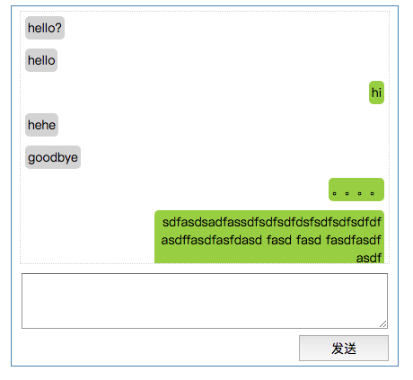
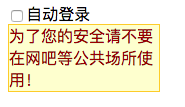
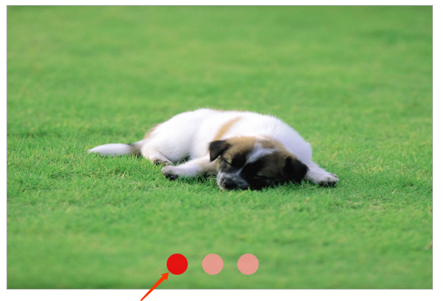
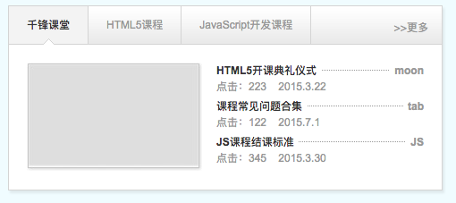
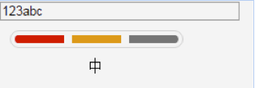

1.DOM属性的基本操作（增／删／改／查）
改变元素的内容(innerHTML)，属性(value)，样式(width,height,background)
也就是对DOM进行增删改查
DOM的属性操作，增删改查
什么是元素的属性？class就是元素的属性，写在元素内的所有东西都是元素的属性，比如link的href，img的src等
元素的属性是什么，分为两种，一种叫内置属性，一种叫非内置属性。
内置属性可以直接通过点"."进行操作
tagName //返回值是当前元素的标签名
innerHTML／innerText //返回值是当前元素的内容
id //返回值是当前元素的ID
title //获取title的标签值，这个title是从document中获取的
className //返回值是当前元素的class
href //返回值是当前的href的值
以上这些属性 既可以获取，也可以设置
非内置属性需要通过一些节点的方法进行操作， 注意：节点的方法，前缀一定是节点
getAttribute() //获取 元素的属性
setAttribute() //设置／修改 元素的属性，低版本的IE不兼容;接收两个参数，属性名和属性值
removeAttribute() //删除 元素的属性，低版本的IE不兼容
案例：1.网页换肤
2.隔行变色
3.简易万年历
2.节点
根据DOM规定，HTML文档中的每个成分都是一个节点。
DOM是这样规定的：
整个文档是一个 文档节点
每个HTML标签是一个 元素节点
包含在HTML元素中的文本是 文本节点
每一个HTML属性是一个 属性节点
注释属于 注释节点
相当于HTML文档中的所有内容都是节点，元素是节点的别称，节点包含元素，当然节点还有好多细化的种类
如何获取DOM节点：
对象.parentNode //获得父元素节点
对象.children //获得 子元素节点的集合，不包含空白节点
//但IE7包含首个注释节点(前面没有元素节点)，IE8包含所有注释节点
对象. childNodes //获得 所有子节点的集合，包括空白节点
//IE7/8不包含空文本节点，但IE7包含首个注释节点(前面没有元素节点)，IE8包含所有注释节点
如何获取属性节点：
对象.attributes //获得所有属性节点，返回一个数组
3.childNodes／过滤空白节点
通过 对象.childNodes 获得所有子节点的集合
节点属性 nodeType 返回值为数值
节点类型(nodeType) 节点名字(nodeName) 节点值(nodeValue)
元素节点 1 标签名 null
文本节点 3 #text 文本
注释节点 8 #comment 注释的文字
文档节点 9 #document null
属性节点 2 属性名 属性值
通过遍历所有子节点，将空白节点过滤掉，得出所有的元素节点
4.高级选取firstChild／lastChild／parentNode／previousSibling／nextSibling
高级选取，（根据某一个节点位置找到它的父子，兄弟节点）
兄弟节点：
父（parent）、子（child）和同胞（sibling）等术语用于描述这些关系。父节点拥有子节点。同级的子节点被称为同胞（兄弟）。
对象.childNodes //获取当前元素节点的所有子节点
对象.ownerDocument //获取该节点的文档根节点，相当与 document
对象.firstChild //获得第一个子节点。（IE7/8非空白节点，可能是注释节点）
对象.firstElementChild //获得第一个非空白的子节点。（IE7/8不支持）
对象.lastChild //获得最后一个子节点（IE7最后一个元素节点，IE8最后一个非空白节点，可能是注释节点）
对象.lastElementChild //获得最后一个非空白的子节点。（IE7/8不支持）
对象.nextSibling //获得下一个兄弟节点。（包含空白节点和注释，IE7/8包括注释节点，不包括空白节点）
对象.nextElementSibling //获得下个兄弟节点。（IE7/8不支持）
对象.previousSibling //获得上一个兄弟节点。（包含空白节点和注释。IE7/8包括注释节点，不包括空白节点）
对象.prveiousElementSibling //获得上一个兄弟节点。（IE7/8不支持）
缺点：兼容性不好
5.DOM元素的基本操作（增／删／改／查）
查询：选择器；
创建：createElement() 配合 appendChild() 将创建好的元素，插入到某个标签内的最后
删除：removeChild() 配合 parentNode
元素.remove() 直接删除当前元素
document.body.removeChild(div)；
修改: outerHTML
oh1.outerHTML = "<h2>" + oh1.innerHTML +"</h2>"
补充：创建文本节点createTextNode(“hello”)
使用方式同createElement()
作业：自行学习掌握insertBefore(newNode,existNode)
1.获取非行内样式（兼容问题）
获取非行内样式（兼容问题）
function getStyle(obj,attr){ //获取非行间样式，obj是对象，attr是值
if (obj.currentStyle){ //针对ie获取非行间样式
return obj.currentStyle[attr];
} else{
return getComputedStyle(obj,false)[attr]; //针对非ie
};
};
4.offsetWidth／offsetHeight／offsetLeft／offsetTop
offsetParent：获取元素的最近的具有定位属性（absolute或者relative）的父级元素。如果都没有则返回body
offsetLeft：获取元素相对具有定位属性的父级元素的左侧偏移距离
offsetTop：获取元素相对就有定位属性的父级元素的顶部偏移距离
scrollLeft/scrollTop：滚动条最顶端和窗口中可见内容的最顶端之间的距离
clientWidth/clientHeight：元素视窗宽度/高度
offsetWidth/offsetHeight：元素实际宽度/高度
这是一张有史以来最全的，有关浏览器及元素各项尺寸的图示
1.聊天对话框

1.点击发送按钮,将信息发送上去,同时,输入框内的信息要清空
2.保证每条信息,发送之后,都在屏幕下面显示
3.发送的信息,一条在左,一条在右
1.自动登录勾选提示效果

要求:鼠标移入显示提示信息,鼠标离开,信息消失
2.点击按钮换图片

3.选项卡切换案例

4.QQ延迟提示框
鼠标经过，显示信息框，鼠标离开，延迟隐藏
5.用户在页面输入信息，点击添加，添加到页面的表格中
用户点击表格中的删除，可以删除对应的信息
1.扩展作业：密码强度

1.可以数字开头
2.在6~18位之间
数字，字母，特殊字符
3.任意1种,差
4,任意2种,中
5,三种,难
包含块：距离绝对定位元素最近的一个拥有定位属性的父元素，如果不存在这个父元素，那么包含块是根元素